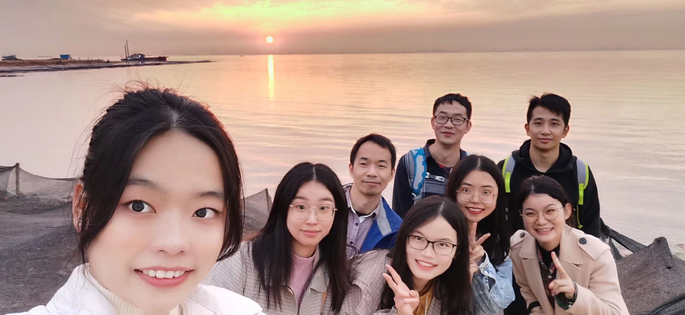

《在柔媚的湛蓝中》
--弗里德里希·荷尔德林
教堂钟楼盛开金属尖顶。
燕语低回，蔚蓝萦怀。
旭日冉冉升起，尽染金属尖顶，
风中，风向标在高处瑟瑟作响。
谁在钟底缘阶而下，
谁就拥有宁静的一生，因为
一旦外表被极度隔绝，
适应性便在人之中彰显。
钟声中的窗，恰如向着美的门。
同样，因为门依然遵循着自然，
便具有林中秀木的相似性。
纯真毕竟也是美。
严肃的心灵生自逝去之物的内部。
影像如此单纯、神圣，以至于
我们事实上时常畏惧于将之描绘。
上苍，始终至善至美，
拥有富足、德行与愉悦。
人或可仿效。
当生命充满艰辛，人
或许会仰天倾诉：我就欲如此这般？
诚然。只要良善纯真尚与心灵同在，
人就会不再尤怨地用神性度测自身。
神莫测而不可知？神如苍天彰明较著？
我宁愿相信后者。神本人的尺规。
劬劳功烈，然而诗意地，
人栖居在大地上。
我是否可以这般斗胆放言，
那满缀星辰的夜影，
要比称为神明影像的人
更为明澈洁纯？
大地之上可有尺规？
绝无！同样
造物主的世界不曾阻挡雷霆的步伐。
花是美的，因为花在阳光下绽放。
我们的双眼总会在生命中发现，
更美的事物仍要以花为名。
哦，我对此颇为明暸！
莫非神矢志于身心喋血，
而不再完整存在？
灵魂，我相信，必当葆有纯真，
否则，就会抵达权力之巅，在鹰翼之上，
膺受赞美的歌咏与众鸟的和鸣。
这就是本性，这就是外表。
哦美丽的溪流，波光粼粼，你在波光中清澈流淌，
宛若穿过银河的神的目光。
我如此熟谙你，
泪水夺眶而出。我看见，在我的外表
一个勃然的生命在我四周遍开万物，因为
我不曾不恰当地将之与墓地上的孤鸟相提并论。
只缘我有一颗跳动的心，
微笑依然是我在忧伤着世人。
我是否能成为一颗彗星？
我相信。因为彗星拥有鸟的迅疾轻捷；
盛开在烈火中，
宛若向着纯洁的赤子。
伟大岂是人之本性所敢僭妄。
德行之喜悦理应得到嘉许，
得到花园里飘荡在三圆柱间严肃神灵的
嘉许。窈窕淑女必当头饰
爱神木之花，因为她的本性与情感
酷似爱神。而爱神木仅仅
生长在希腊的大地。
当一个人向镜中凝望，
在镜中看见自己如同被临摹的影像；
影像酷似真人。
人的影像生有双目，
明月秉有辉光。
而俄狄浦斯王拥有一目或已逾分。
他的人之苦难，无法描绘，无以言表，
无可置辩。
一旦戏剧表现这样一个人物，苦难油然而生。
当此刻我怀念着你，苦难于我意味着什么？
当溪流将我裹挟至亚细亚般
绵延的某处尽头。
无疑，俄狄浦斯饱受着这苦难。
无疑事实如此。
是否赫拉克勒斯也曾苦难？
毫无疑问。这对相交莫逆的朋友
不也承受着他们的苦难？
赫拉克勒斯同诸神干戈相向，就是苦难。
分享这些被生命嫉妒的不朽，
也是一种苦难。
而当一个人被太阳斑所覆盖，被些许斑点
彻底覆盖，更是一种苦难！这是艳阳的作为：
太阳裁处着万物。
太阳以光芒的魅力玫瑰一般
引领着少年人的道路。
俄狄浦斯承受的苦难，
看上去恰如
一个穷人悲叹
丢失了什么。
哦，拉伊俄斯之子，希腊大地上穷困的异乡人！
生即是死，死亦是一种生。